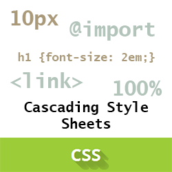
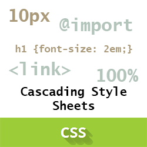

Статья
CSS (Cascading Style Sheets) — язык таблиц стилей, который позволяет прикреплять стиль (например, шрифты и цвет) к структурированным документам (например, документам HTML и приложениям XML).Обычно CSS-стили используются для создания и изменения стиля элементов веб-страниц и пользовательских интерфейсов, написанных на языках HTML и XHTML, но также могут быть применены к любому виду XML-документа, в том числе XML, SVG и XUL.
Отделяя стиль представления документов от содержимого документов, CSS упрощает созданиевеб-страниц и обслуживание сайтов.CSS поддерживает таблицы стилей для конкретных носителей, поэтомуавторы могут адаптировать представление своих документов к визуальным браузерам, слуховым устройствам,принтерам, брайлевским устройствам, карманным устройствам и т.д.
 

Виды таблиц стилей
Внешняя таблица стилей представляет собой текстовый файл с расширением .css, в котором находится набор CSS-стилей элементов. Файл создаётся в редакторе кода, так же как и HTML-страница. Внутри файла могут содержатся только стили, без HTML-разметки. Внешняя таблица стилей подключается к веб-странице с помощью элемента, расположенного внутри раздела. Такие стили работают для всех страниц сайта.
- Виды таблиц стилей
- Внутренние стили
- Встроенные стили
Виды селекторов
Селекторы представляют структуру веб-страницы. С их помощью создаются правила для форматирования элементов веб-страницы. Селекторами могут быть элементы, их классы и идентификаторы, а также псевдоклассы и псевдоэлементы.
- Универсальный селектор
- Селектор элемента
- Селектор класса
Встроенные стили
Для более точного отбора элементов для форматирования можно использовать комбинации селекторов:
a[href][title] — выберет все ссылки, для которых заданы атрибуты href и title;
img[alt*="css"]:nth-of-type(even) — выберет все четные картинки, альтернативный текст которых содержит
слово css.
Фото
Отспупы Блоки КодО нас
Раздел «О нас» дает посетителям сайта представление о компании или личности. Цифры, кейсы, ссылки на крупных заказчиков — подтвержденная информация повышает ваш авторитет и формирует доверие со стороны аудитории. Здесь вы показываете свою значимость и объясняете, почему выгодно быть вашим клиентом.Этот раздел подходит для краткого рассказа о команде и истории развития компании. Покажите лица, которые стоят за продуктом — открытость расположит к вам людей. Раскройте свою миссию. Например, вы не просто торгуете техникой, а имеете цель — облегчить быт и улучшить качество жизни.
Если есть награды и сертификаты, разместите их здесь.Есть вероятность, что сайт могут найти по ключевикам на странице, описывающей вашу деятельность. Учитывайте это при составлении текста. Возможно, вам пригодится этот материал: «SEO-текст: как писать оптимизированные и полезные статьи».
Постарайтесь также,чтобы его было интересно читать. Чем больше времени пользователь проведет у вас, тем лучше будетпозиция сайта в выдаче.